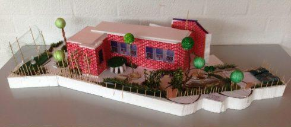

Welkom op de website van
Project Duurzaamheid
Mens & Maatschappij
Eindopdracht

Maquette & Pitch
In de vorige opdracht over duurzaamheid hebben jullie nagedacht over hoe jullie het schoolgebouw
duurzaam zouden kunnen veranderen.
In deze eindopdracht ga je een maquette maken over een schoolgebouw of een schoolplein.
Uitleg opdracht
In hetzelfde tweetal gaan jullie kiezen waar jullie een maquette van gaan maken, keuze uit het schoolgebouw
en schoolplein. Hier heb je 90 minuten de tijd voor.
Wanneer iedereen klaar is met het maken van de maquette worden deze aan elkaar gepresenteerd, daarin leggen
de duo’s in een pitch (=korte presentatie) uit wat het schoolgebouw of het schoolplein duurzamer maakt.
Wat heb je nodig
Karton
Papier
Kleurtjes
Schaar
Lijm of plakband
Eventueel anders wat je wilt gebruiken
Werkwijze
Maak aan de hand van je moodboard een schets. Overleg goed met elkaar hoe jullie het idee
uiteindelijk vorm willen gaan geven.
Pak alle benodigde materialen erbij.
Verdeel taken (wie gaat er knippen, wie gaat er plakken enz.)
Maak de maquette.
Bedenk een pitch samen waarin jullie vertellen wat jullie schoolgebouw duurzaam maakt, leg daarin uit wat
jullie voor duurzame dingen hebben bedacht en waarom.
Hulp bij de opdracht
De vorige opdracht, kennis van internet, ideeën van internet en kennis van jullie zelf. Bij vragen kun
je deze stellen aan de docent.
Inleveren
Nu je klaar bent met de moodboard, zorg je ervoor dat deze wordt ingeleverd op de website in de
inleverbox. De inleverbox kan je vinden onder het kopje ‘inleveren’.